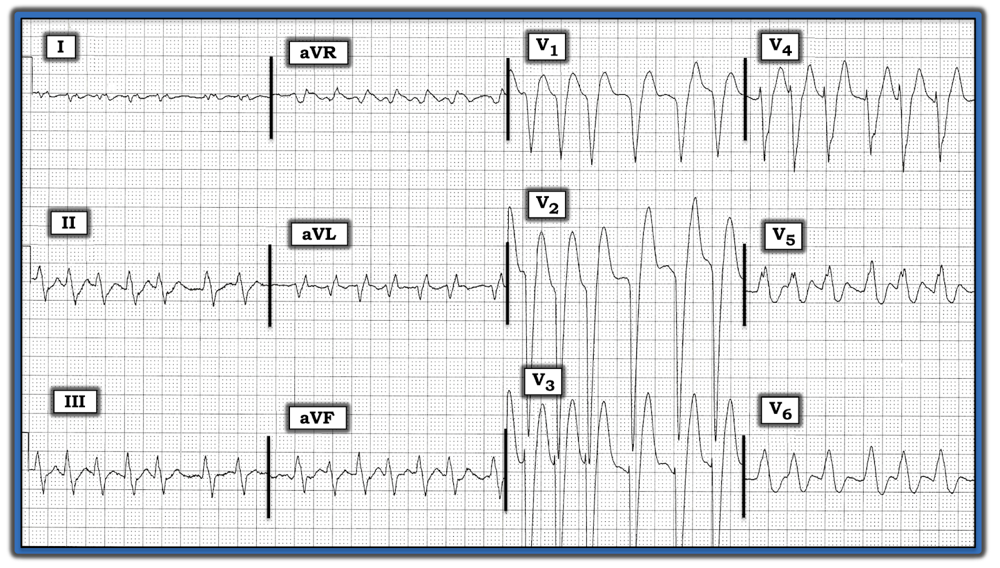
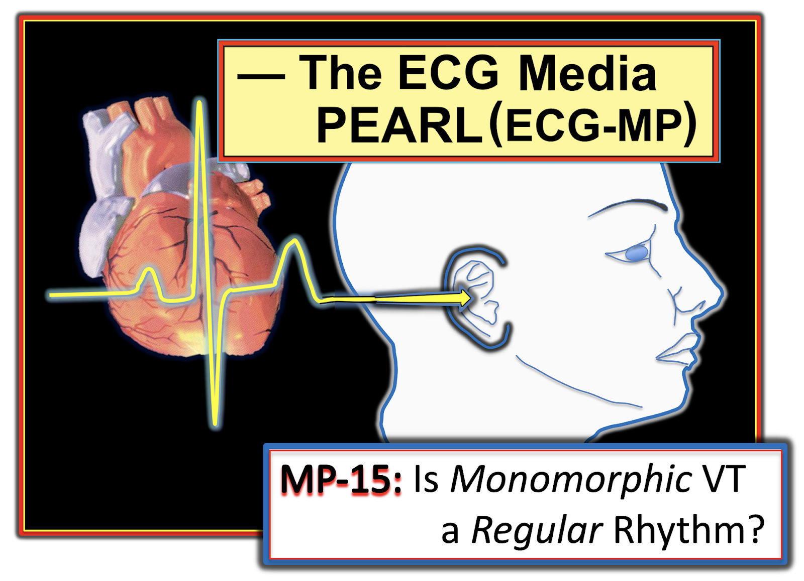

Blog #198 — VT có thể không đều được không (LBBB?)
Điện tâm đồ ở Hình-1 được ghi tại khoa cấp cứu (ED) ở một người đàn ông 60 tuổi đến viện vì khó thở tăng lên. Ông có tiền sử bệnh cơ tim giãn — và đã được biết là có LBBB (blốc nhánh trái – Left Bundle Branch Block) hoàn toàn trên các điện tâm đồ trước đây, dù không có bản sao nào của các bản ghi cũ vào thời điểm bệnh nhân được khám lần đầu. Với tiền sử này — Bạn sẽ đọc điện tâm đồ của ông như thế nào?
- Nhịp là gì? Bạn có thể loại trừ VT (nhịp nhanh thất – Ventricular Tachycardia) dựa trên điện tâm đồ này không?
- Điện tâm đồ ở Hình-1 có điển hình cho LBBB hoàn toàn không?
- Có LVH không?
- Có sóng T tối cấp gợi ý tắc cấp LAD ở các chuyển đạo trước không?


=======================================
LƯU Ý #1: Một số bạn đọc có thể muốn vào lúc này nghe bản ECG Audio dài 5 phút trước khi đọc Suy nghĩ của tôi về nhịp ở Hình-1. Bạn có thể xem Suy nghĩ của tôi vào bất cứ lúc nào (phần này nằm bên dưới ECG MP-15).
=======================================


Hôm nay ECG Media PEARL #15 (5 phút Audio) — VT đơn dạng có phải là nhịp đều không? — lưu ý 2 Cảnh báo nhấn mạnh rằng: i) AFib nhanh có thể trông như đều; và, ii) VT đơn dạng không phải lúc nào cũng đều tuyệt đối.
Cách tiếp cận CỦA TÔI khi đánh giá điện tâm đồ ở Hình-1:
Điện tâm đồ ở Hình-1 là một nhịp nhanh QRS rộng (WCT – Wide-Complex Tachycardia).
- Nhịp nhanh — có lúc tần số tim đạt khoảng 160-180/phút.
- Dù có vẻ đều ở một số đoạn (xem chuyển đạo III và aVF) — đo bằng compa đo (calipers) gợi ý toàn bộ nhịp không đều hoàn toàn.
- Phức bộ QRS rất rộng (tới 0.16 giây ở một số chuyển đạo).
- Không thấy sóng P nào.
NHẬN ĐỊNH về nhịp: Việc thấy nhịp không đều hoàn toàn mà không có dấu hiệu rõ của sóng P gợi ý mạnh rằng nhịp ở Hình-1 là AFib (rung nhĩ – Atrial Fibrillation) với đáp ứng thất nhanh.
- ĐIỂM THEN CHỐT (PEARL) #1: Hình thái QRS ở các chuyển đạo trước ngực phù hợp trọn vẹn với LBBB hoàn toàn (tức là QRS chủ yếu âm ở các chuyển đạo trước — với sóng R đơn pha dương ở chuyển đạo V6). Tuy vậy — điều quan trọng là nhận ra rằng hình thái QRS ở các chuyển đạo chi thì rất không điển hình cho LBBB. Đó là vì thay vì thấy sóng R đơn pha dương ở các chuyển đạo bên I và aVL — thì lại gần như là một vectơ triệt tiêu (tức là QRS rất nhỏ dạng rsr’) ở chuyển đạo I — và, một phức bộ rSR’ với sóng R biên độ nhỏ ở chuyển đạo aVL.
- Sẽ thực sự hữu ích nếu có được một bản ghi cũ của bệnh nhân này! Có sự khác biệt đáng kể trong cách các bác sĩ tim mạch đọc các rối loạn dẫn truyền khác nhau — và có nhiều ý kiến về việc liệu hình thái QRS trên một điện tâm đồ như ở Hình-1 nên được đọc là “LBBB” — hay — là một dạng nào đó của chậm dẫn truyền trong thất (IVCD – IntraVentricular Conduction Defect). Điều này có liên quan tới case hôm nay — vì câu hỏi đặt ra là liệu nhịp WCT này với QRS cực rộng (tức là ~0.16 giây) và hình thái QRS không điển hình cho LBBB có thể là nhịp nhanh thất hay không?
- ĐIỂM THEN CHỐT (PEARL) #2: Điều quan trọng là nhận ra rằng VT không phải lúc nào cũng là nhịp đều (điểm này được bàn chi tiết hơn trong ECG Media Pearl #15 ở trên). Tuy vậy — hiếm khi một nhịp WCT nhanh như vậy, và không đều hoàn toàn như nhịp ở Hình-1 lại là VT — vì vậy dù hình thái QRS không điển hình, chẩn đoán nhịp khả dĩ nhất vẫn là AFib với đáp ứng thất nhanh.
- ĐIỂM THEN CHỐT (PEARL) #3: Một số bệnh nhân LBBB có thể biểu hiện hình thái QRS không điển hình cho rối loạn dẫn truyền này. Điều này có thể là hậu quả của: i) Sự mất cân bằng tương đối bên trong hệ thống dẫn truyền của nhánh trái, trong đó các phân nhánh bị bệnh nặng nhưng chưa mất chức năng hoàn toàn đôi khi có thể biểu hiện trục mặt phẳng trán lệch sang phải dù có LBBB; và/hoặc, ii) Sẹo do bệnh cơ tim nặng và/hoặc nhồi máu cũ làm thay đổi hình ảnh điện tâm đồ nền của bệnh nhân.
- ĐIỂM THEN CHỐT (PEARL) #4: Thêm một bằng chứng ủng hộ nhịp ở Hình-1 là nhịp trên thất — là nhánh xuống rất dốc của sóng S ở các chuyển đạo trước V2, V3 và V4 (dù ít dốc hơn một chút ở chuyển đạo V1). Tuy không có tính quyết định — nhánh xuống gần như thẳng tắp của các sóng S trước này là đặc điểm thường gặp của dẫn truyền kiểu LBBB. Ngược lại — các nhịp thất thường biểu hiện sự chậm trễ nhiều hơn (và nhánh xuống ban đầu kém dốc hơn đáng kể) ở các sóng S trước.
- ĐIỀU CỐT LÕI về nhịp: Tôi ước tính mức độ chắc chắn của mình là ~95% rằng nhịp ở Hình-1 là AFib nhanh. Tôi sẽ bắt đầu điều trị theo hướng đó. Việc tìm được một bản ghi cũ của bệnh nhân với hình thái QRS giống hệt có thể nâng mức độ tin cậy của tôi lên 100% rằng nhịp là AFib.
Thêm các dấu hiệu điện tâm đồ đáng chú ý ở Hình-1:
- Các tiêu chuẩn điện tâm đồ thông thường để chẩn đoán LVH (phì đại thất trái – Left Ventricular Hypertrophy) không còn đúng khi có LBBB. Đó là vì trình tự khử cực và tái cực thất bị thay đổi hoàn toàn bởi rối loạn dẫn truyền này. Tuy vậy — hầu như mọi bệnh nhân LBBB hoàn toàn đều có ít nhất một dạng bệnh tim cấu trúc nền nào đó. Về mặt thống kê — phần lớn những bệnh nhân này có LVH. Trong bối cảnh LBBB — việc thấy một hoặc nhiều sóng S rất sâu ở các chuyển đạo trước ≥25-30 mm (ở chuyển đạo V1, V2 và/hoặc V3) gợi ý mạnh LVH. Trong case hôm nay — sóng S ở chuyển đạo V2 >45 mm, vượt xa giá trị này. Sóng S ở chuyển đạo V3 vượt ra ngoài giấy sau 20 mm (và chắc chắn cũng sẽ vượt 30 mm nếu sóng S không bị cắt cụt).
- ĐIỂM THEN CHỐT (PEARL) #5: Ngay cả khi không được cho biết trước — sự kết hợp của LBBB + QRS giãn rộng rõ (0.16 giây) + biên độ sóng S ở các chuyển đạo trước rất lớn — gợi ý mạnh một bệnh cơ tim nền. Với điều này trong đầu — hình thái QRS bất thường mà chúng ta thấy ở chuyển đạo I và aVL không quá bất ngờ.
- LƯU Ý: Sóng T ở các chuyển đạo trước rất lớn! — đạt biên độ gần 20 mm ở chuyển đạo V2. Tuy vậy — xét tới việc sóng S ở các chuyển đạo tương ứng lớn như thế nào — tôi không có cảm giác rằng sóng T ở các chuyển đạo trước cao không tương xứng. Đây là một nhận định mang tính chủ quan. Các công cụ đánh giá khách quan (như tiêu chuẩn Smith-Sgarbossa cải biên) — khó áp dụng cho điện tâm đồ ở Hình-1, vì nhánh lên của sóng T quá dốc không cho chút gợi ý nào về mức ST chênh lên thực sự tại điểm J. Cuối cùng — biên độ ST-T còn được làm nổi bật thêm bởi nhịp nhanh.
ĐIỀU CỐT LÕI: Tôi cho rằng các thay đổi ST-T mà chúng ta thấy ở các chuyển đạo trước của Hình-1 không tăng không tương xứng so với các sóng S rất lớn ở những chuyển đạo này — và, tôi cho rằng các thay đổi này ít có khả năng phản ánh một biến cố cấp (nhất là khi không hề nhắc tới đau ngực). Tuy vậy — tôi chưa sẵn sàng loại trừ hoàn toàn một biến cố cấp chỉ dựa vào điện tâm đồ này.
- Nguyên tắc MẤU CHỐT: “Điều trị vấn đề chính”. Dù bệnh nhân trong case hôm nay có đang bị nhồi máu cơ tim (MI) cấp hay không — vấn đề chính có vẻ là AFib nhanh. Cần điều trị vấn đề này trước — với việc điều trị nhắm vào nguyên nhân gây khó thở tăng lên của bệnh nhân. Sau đó có thể ghi lại điện tâm đồ — và đánh giá lại.
Theo dõi ca bệnh: Đã tìm được điện tâm đồ cũ của bệnh nhân — và rối loạn dẫn truyền với hình thái QRS thấy ở Hình-1 tương tự như trên bản ghi cũ. Điều này khẳng định chẩn đoán nhịp là AFib. Không có MI cấp.
==============================
Các bài ECG Blog khác liên quan tới case hôm nay:
- ECG Blog #146 — một ví dụ về LBBB có các thay đổi của STEMI cấp.
Tôi dẫn link tới 3 Case minh họa khác lấy từ Dr. Smith’s ECG Blog. Với mỗi bài — Vui lòng kéo xuống cuối trang để xem Bình luận của tôi. Các case này giúp hiểu rõ cách đánh giá nhồi máu cơ tim do tắc (OMI – Occlusion-based MI) cấp ở bệnh nhân LBBB (kèm tham chiếu tới tiêu chuẩn Sgarbossa cải biên theo Smith khi phù hợp):
- Bài ngày 16 tháng 12 năm 2019 trên Dr. Smith’s ECG Blog.
- Bài ngày 7 tháng 4 năm 2019 trên Dr. Smith’s ECG Blog.
- Bài ngày 24 tháng 5 năm 2019 trên Dr. Smith’s ECG Blog.